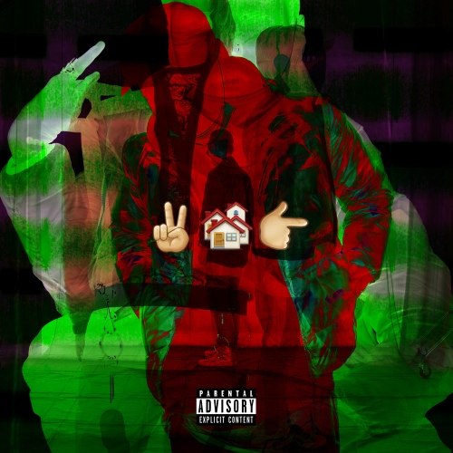

2016년 6월 14일에 발매된 JUSTHIS의 정규 1집이자 데뷔 이후 처음으로 공식적으로 발매한 앨범 단위의 작업물이다. 그가 레이블 없이 홀로 활동하던 인디펜던트 시절에 발매한 앨범으로, 하나부터 열까지 직접 제작한 앨범이라고 생각하면 될 것이다. 상당히 긴 제목 탓에 제목을 이루는 단어들의 앞 글자들을 따서 '2MH41K' 라고 줄여 부르기도 한다.
앨범 전체가 하나의 서사로 묶여서 구성된 콘셉트 앨범으로 JUSTHIS의 어린 시절부터 앨범이 발매될 당시에 이르기까지를 함축적으로 담아낸 작품이다. 상당히 구체적인 일화들이 주된 중심이 되는 전반부와 좀 더 추상적이고 그의 생각들이 담겨있는 후반부로 크게 나뉘며 앨범 속에 여러 가지 의미를 내포시키기 위해서 장치적인 요소들이 상당히 많이 사용된 앨범이다. 몇몇 트랙의 경우 앨범이 발매될 당시의 JUSTHIS의 생각과도 많이 다른 내용을 담고 있는 경우가 있어서 앨범에 담긴 진정한 의미를 이해하기 위해서는 Skit을 포함한 트랙들을 가급적 끊김 없이 한 번에 듣는 것을 추천한다.
자극적이고 강한 어휘, 표현들과 논란이 될만한 내용을 많이 담고 있어서 JUSTHIS는 본 앨범을 통해서 여러 논란에 휩싸이기도 하였지만 명실상부 본작은 현재 그의 커리어를 만들어준 작품이라고 할 수 있다. JUSTHIS 본인도 그런 점을 인지하고 있는지 2020년에 발매된 SHOW ME THE MONEY 9 Special 싱글 음반에 수록된 "G+Jus Freestyle"에서 빈지노의 라인을 인용하여 자신의 커리어를 있게 해준 본작에 대해서 언급하기도 하였다.
